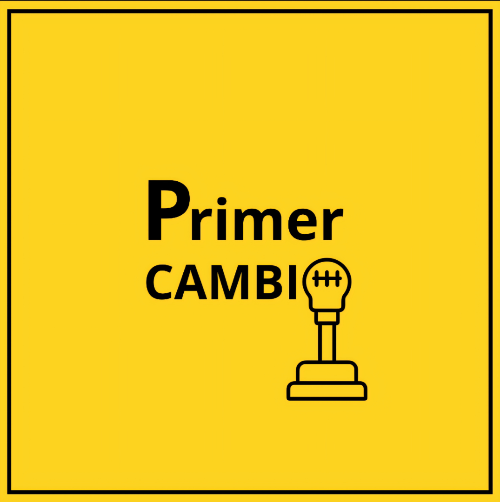
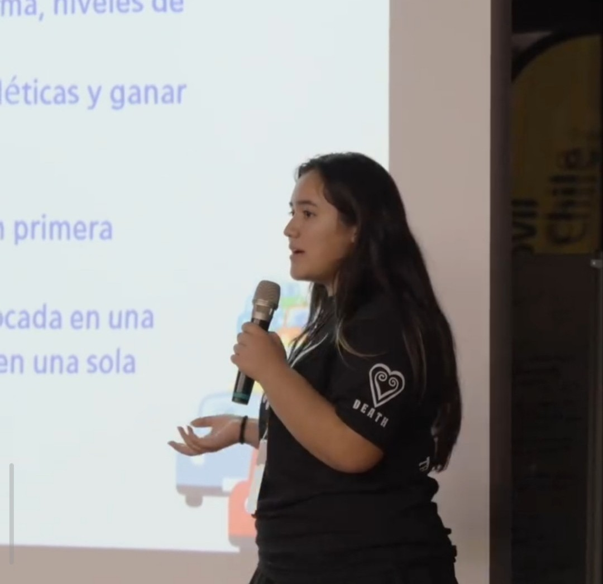
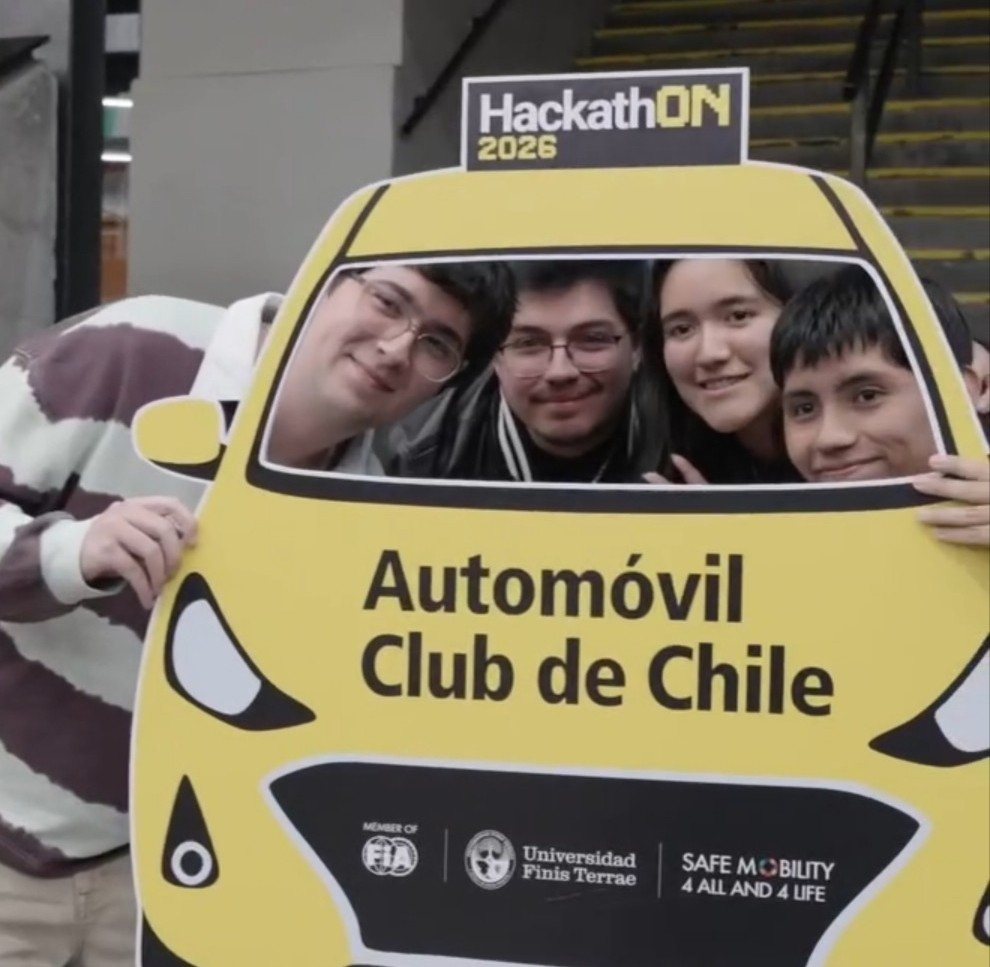
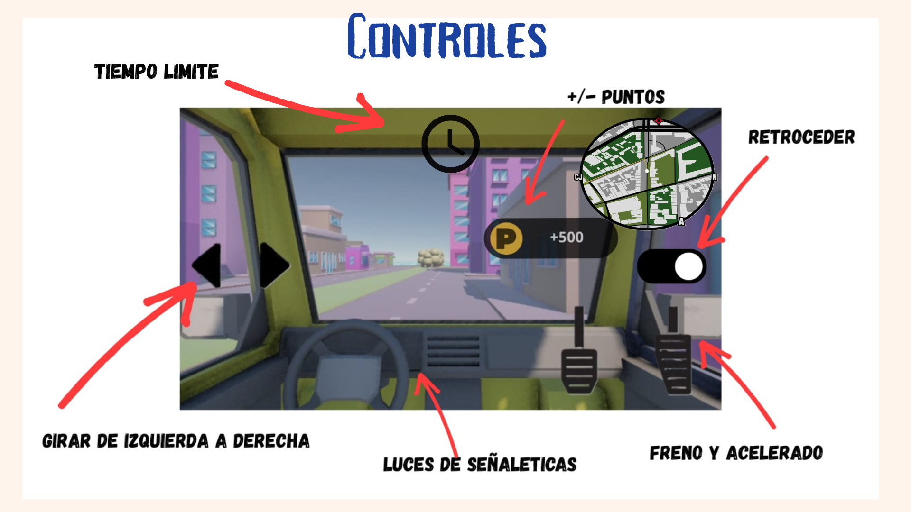
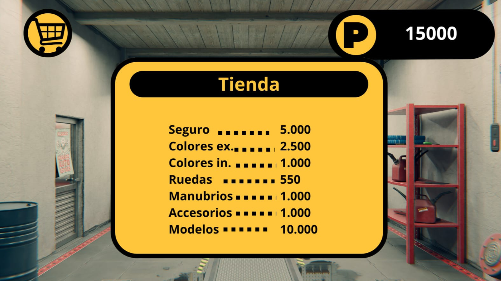
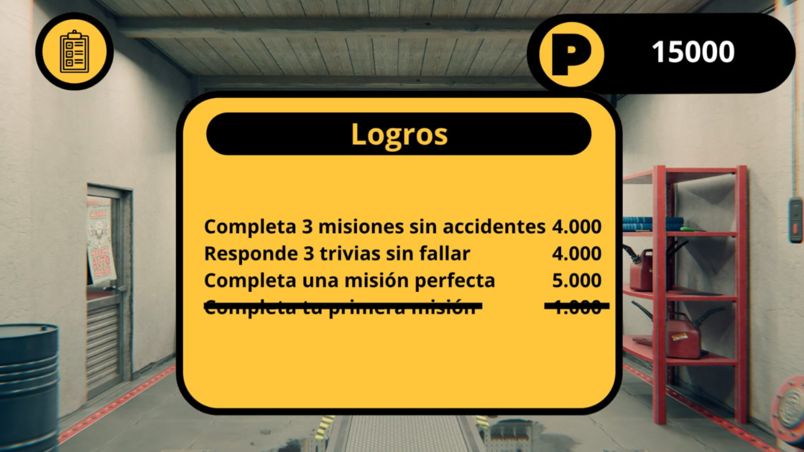

Demo de la mecánica "Ganar puntos".
Demo de la mecánica "Perder puntos".








Primer Cambio es la propuesta de un videojuego educativo orientado a fomentar la seguridad vial mediante mecánicas interactivas y decisiones que reflejan situaciones reales del tránsito. El proyecto fue concebido durante una hackatón intensiva de dos días, donde el objetivo consistía en diseñar un videojuego, desarrollar su propuesta y presentar un pitch frente a un jurado especializado.
Nuestro equipo estaba compuesto por cuatro integrantes de dos universidades distintas. Debido a la diferencia de experiencia entre los miembros y al corto tiempo disponible, asumí un rol activo en la organización del trabajo, guiando el proceso de diseño, distribuyendo tareas y ayudando a estructurar la propuesta para cumplir los objetivos de la competencia.
Como premio recibimos un viaje de tres días a Argentina con todos los gastos pagados, además de la posibilidad de ser contactadas en el futuro como consultoras creativas durante el desarrollo profesional del videojuego.





